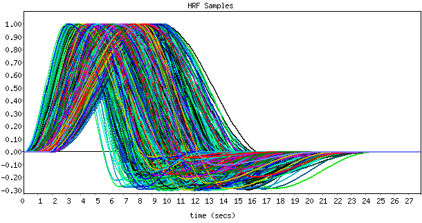

Basis Set Report
Wed Sep 15 15:43:19 BST 2004
FLOBS output is
/home/fs3/steve/fsl_dev/src/feat5/default_flobs.flobs
To use this in FEAT, select the Optimal/custom basis functions convolution option in the Stats section of the FEAT GUI. Using the file selector which then appears, choose this FLOBS output directory. Make this HRF setting and file selection for each relevant original EV.
m1=[0-2s] m2=[3-8s] m3=[3-8s] m4=[3-8s] c=[0-0.3]

Basis set generated by FLOBS (FMRIB's Linear Optimal Basis Set)
M.W. Woolrich, T.E.J. Behrens, and S.M. Smith. Constrained linear basis sets for HRF modelling using Variational Bayes. NeuroImage, 21:4(1748-1761) 2004.
This page produced automatically by Make_flobs - a part of FSL.